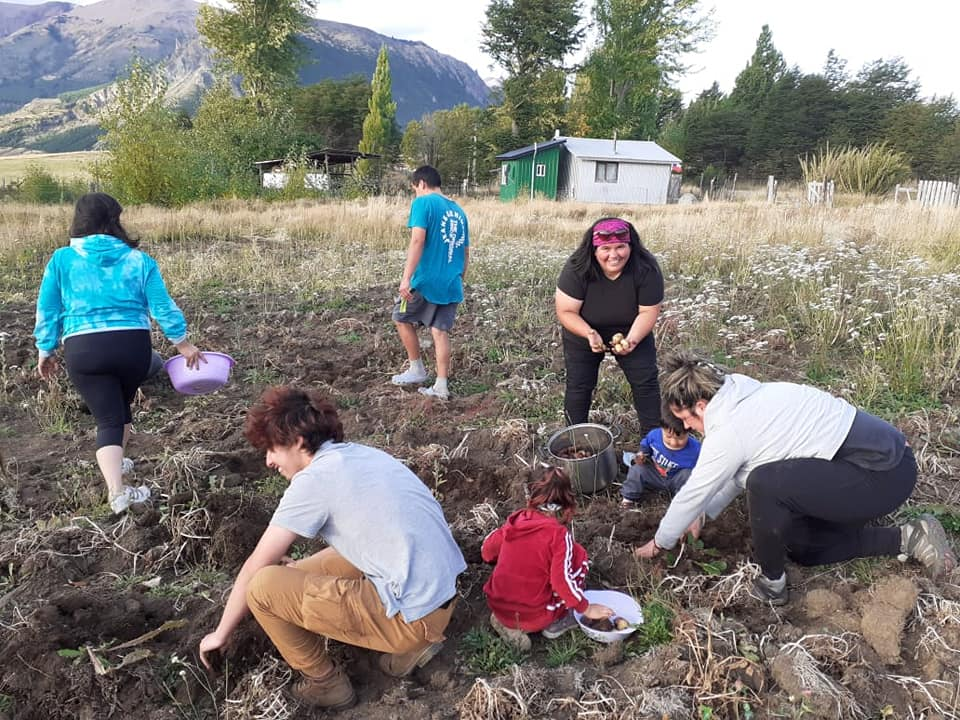

Propuesta
Algunas Funciones del Concejo Municipal* Aprobar o rechazar ordenanzas, Plan de Desarrollo Comunal, Presupuestos, Plan Regulador, Permisos, Licitaciones, entre otros.
* Fiscalizar y evaluar la Gestión de la o el Alcalde, verificando que los actos municipales se hayan ajustado a normas y acuerdos del Concejo.
Propuestas Concejalias + Cercana:
- Descentralizar la Gestión Municipal, estableciendo sesiones del concejo en localidades rurales.
- Trabajo con Organizaciones Sociales, creando líneas directas de trabajo con Juntas de Vecinos/as, Club de Adultos Mayores, Agrupaciones Deportivas y otras, fortaleciendo el Cosoc, para que sea participativo y vinculante.
- Implementar una Agenda Comunal de Género, que sea transversal a todas las Direcciones Municipales.
- Reajustar oficina de la Mujer a Oficina de Género y Diversidad Sexual.
- Entregar boletines a las y los vecinos para informar decisiones y acuerdos del Concejo.
Quien soy
Soy Coyhaiquina, hija, madre, abuela, Dirigenta Social y Jefa de Hogar.
Mi experiencia laboral ha sido tanto en el sistema público en donde me he desempeñado mayoritariamente en el área de desarrollo, autonomía y no violencia hacia la mujer, y privado donde hoy me desenvuelvo como maestra en construcción.
Coyhaique merece un desarrollo social y comunitario, a ello me comprometo y pondré todo mi esfuerzo, dedicación y trabajo.
